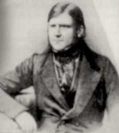

|  |
Dalrymple's sign
Widened palpebral tissue or lid spasm seen in thyrotoxicosis (Basedow's
disease), causing abnormal wideness of the palpebral fissure.
Biography:
John Dalrymple was the eldest son of the famous surgeon William Dalrymple
(1772-1847) in Norwich. He received his first medical education from his
father, before entering the University of Edinburgh, where he graduated
in medicine in 1827. That year he also became a member of the Royal College
of Surgeons and settled in practice in London where he was active as an
eye surgeon.
In 1832 he became assistant surgeon at the Royal Ophthalmic Hospital, becoming a surgeon in 1843. He became Fellow of the Royal Society in 1850, 1851 Member of the Council of the Royal College of Surgeons.
Dalrymple was also a skilled microscopist and histologist, and it was in these respects he plays a role in the case of Thomas McBean (the first patient with Bence Jones Protein). It should be noted that he was the first to publish on this special case.
Despite his rather frail health he attracted many patients, but ill health forced him to retire from the hospital in 1847, only 47 years of age. He lived alone on Grosvenor Street in Mayfair. He died from kidney failure only weeks after the publication of his magnum opus on the pathology of the eye in 1852. A compilation of his scientific works is found in the Catalogue of Scientific Papers of the Royal Society.
Dalrymple contributed to ophthalmological literature with two large works, published in 1834 and 1852. John Dalrymple played an important part in the discovery of the albumin now called Bence Jones’ protein. See under Henry Bence Jones, English physician and chemist, 1813-1873.
Bibliography:
The anatomy of the human eye. London, 1834.
With his own illustrations.
Pathology of the human eye. London, 1852.
Atlas of the pathology of the eye.
A unique work with 34 colour lithographs.